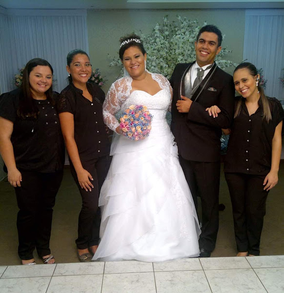
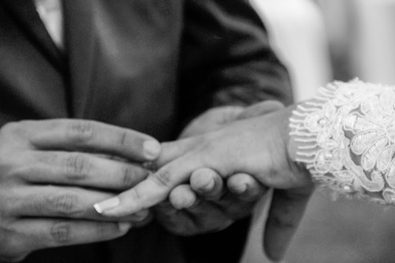

Kessia Campos organiza e conduz o seu casamento ou a sua festa com atenção a cada detalhe.

Muita gente acha que é a mesma coisa. Não é: uma cuida do antes, a outra cuida do dia.
É o planejamento. Quem assessora ajuda você a organizar tudo o que precisa estar pronto até a data.
É a condução. A equipe de cerimonial faz o evento acontecer na hora certa, do jeito planejado.
Kessia Campos faz assessoria e cerimonial: conte o seu evento e ela explica como pode ajudar em cada etapa.

Casamento ou outra celebração: o primeiro passo é uma conversa para entender o que você imagina. Diga o tipo de evento e a data, e a Kessia responde pelo WhatsApp.
Responda 5 perguntas e envie para a Kessia um resumo do seu evento, com um cronograma sugerido.
WhatsApp: (85) 99914-7175
Endereço: R. José Cavalcante Sobrinho · Messejana, Fortaleza - CE, 60871-640
Falar com a Kessia